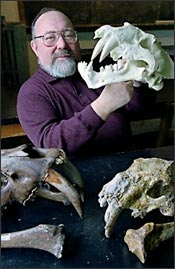

Larry D. Martin
Larry Martin is one of a handful of scientists who argue that birds did not descend from dinosaurs but rather from earlier, more primitive reptiles, known as thecodonts. He thinks that those who argue for a bird–dinosaur connection are misinterpreting the fossil record.
Martin was trained as an ornithologist—a scientist who studies birds. He received his undergraduate and master's degrees from the University of Nebraska, and then completed his doctoral work at the University of Kansas in 1973.
Martin argues that the similarities between Archaeopteryx and the thecodonts are more significant than the similarities between Archaeopteryx and dinosaurs. He points to a small, feathered reptile called Longisquama insignis, which glided out of trees roughly 220 million years ago, as the more probable ancestor of birds.
Although few paleontologists agree with Martin's conclusions about how birds evolved, he is recognized as an authority on early birds. In 1997 he was invited to join a team organized by the Academy of Natural Sciences to evaluate the fossil of Sinosauropteryx prima, an apparently feathered, but not birdlike dinosaur discovered in China. Although the team was unable to reach a definitive conclusion about the significance of the fossil, they agreed that the featherlike structures were very different from feathers found on birds today.
Since 1972 Martin has been a professor of ecology and evolutionary biology at the University of Kansas, where he also serves as senior curator at the Natural History Museum. He has published more than 300 scientific papers and two books about evolution and the fossil record. He estimates that with the abundance of ongoing fossil discoveries, the debate over the origins of birds will most likely be settled within the next decade or so.